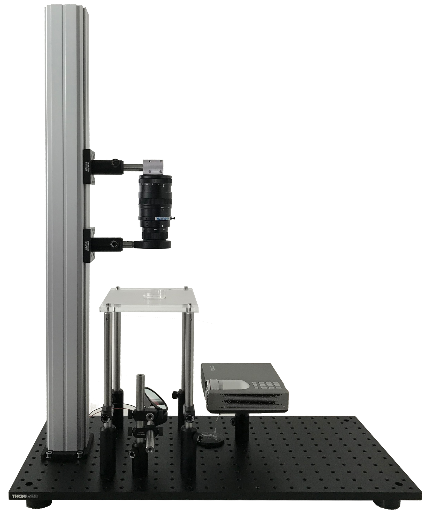
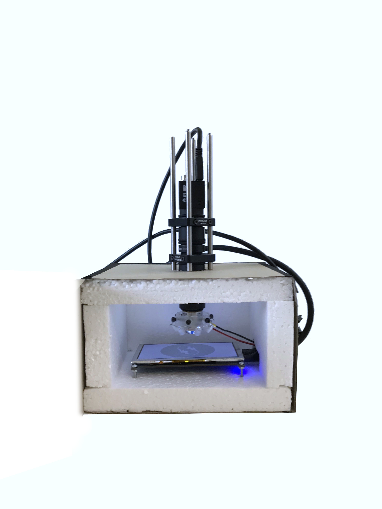

Hardware description¶
In our effort to make experiments as open and reproducible as possible, we documented example setups that can be used together with the Stytra software for performing behavioral experiments in head-restrained and freely swimming fish. In general, the minimal setup for tracking the fish larvae requires a high-speed camera (a minimum of 100 Hz is required to capture the most common tail beats which have a frequency up to 50 Hz, but we recommend at least 300 Hz to describe the details of the tail kinematics). The camera must be equipped with a suitable objective: a macro lens for the head-restrained tail tracking or a normal lens for the freely swimming recordings, where a smaller magnification and a larger field of view are required. Infrared illumination is then used to provide contrast without interfering with the animal’s visual perception. Since fish strongly rely on vision and many of their reflexes can be triggered by visual stimulation, the setup is usually equipped with a projector or screen to present the visual stimulus to the fish. Although in our setups stimuli are projected below the fish, a lateral projector would be fully compatible with Stytra. Most of our rig frames consist of optomechanical parts commonly used for building microscopes. These parts are convenient but not strictly necessary to build a well-functioning rig. Replacing them with simple hardware-store and laser-cut components can significantly reduce the costs. Therefore, we also provide instructions for a head-restrained setup built inside a cardboard box, where the most expensive item is the high-speed camera, bringing the price of the whole setup without the computer below 700 euros.
Here we describe two configurations of our setups: the first one is for detailed kinematic tracking of eyes and tail in a fish with head restrained in agarose, the second for tracking freely swimming fish in a petri dish.
Finally, we present a cheap version of the behavioral setup that can be easily built for about 700 euros, and easily assembled using cardboard, laser-cut parts or other custom-made enclosures.
Head-restrained fish setup¶
This configuration requires high magnification, provided by a 50 mm macro objective. On the other side, illumination be provided only in a very small field and can be accomplished by with a simple single IR-LED.
{kind=link}
Freely swimming fish setup¶
This configuration uses a camera with larger field of view and a custom-built LED box for illuminating homogeneously a large area.

List of components¶
Below we provide a list of all components required for building the two setups. Indicative prices in euros (Jul 2018) and links to supplier pages are provided as well.
Note
Many parts of the setup, such as the base, the stage and the holders can easily be replaced with custom solutions.

Head-restrained setup¶
Component |
Manufacturer |
Part No |
Specs |
Amount |
Price (euros) |
Link |
Notes |
Replacement |
|
|---|---|---|---|---|---|---|---|---|---|
Breadboard |
|||||||||
1.1 |
Aluminum breadbord |
Thorlabs |
MB3045/M |
1 |
170 |
https://www.thorlabs.com/thorproduct.cfm?partnumber=MB3045/M |
|||
1.2 |
Feet |
Thorlabs |
AV4/M |
1 |
20.86 |
https://www.thorlabs.com/newgrouppage9.cfm?objectgroup_id=6421 |
|||
Rail |
|||||||||
2.1 |
Construction rail |
Thorlabs |
XT66-750 |
1 |
80 |
https://www.thorlabs.com/thorProduct.cfm?partNumber=XT66-750 |
|||
2.2 |
Construction rail mount |
Thorlabs |
XT66P1 |
1 |
32.25 |
||||
2.3 |
Rail carriage |
Thorlabs |
XT66P2/M |
2 |
62.25 |
https://www.thorlabs.com/thorproduct.cfm?partnumber=XT66P2/M |
|||
2.4 |
Post holder |
Thorlabs |
PH20/M |
2 |
6.33 |
||||
Stage |
|||||||||
3.1 |
Post |
Thorlabs |
TR250/M |
4 |
8.12 |
can be smaller for embedded prep |
|||
3.2 |
Post holder |
Thorlabs |
PH75/M |
4 |
7.44 |
https://www.thorlabs.com/thorproduct.cfm?partnumber=PH75/M#ad-image-0 |
|||
3.3 |
Acrilic stage |
custom |
133555 |
1 |
10 |
https://www.modulor.de/acrylglas-gs-transparent-farblos-6-00-x-250-x-500-mm.html |
|||
3.4 |
Screen |
Rosco |
#3026 |
Cinegel |
5x5cm |
5 |
https://us.rosco.com/en/products/filters/r3026-tough-white-diffusion |
||
Projector |
|||||||||
4.1 |
Projector |
Asus |
P3E |
1 |
534 |
||||
4.2 |
Display cable (HDMI) |
Any |
|||||||
4.3 |
Post |
Thorlabs |
TR40/M |
1 |
4.52 |
||||
4.4 |
Post holder |
Thorlabs |
PH40/M |
1 |
6.56 |
https://www.thorlabs.com/thorproduct.cfm?partnumber=PH40/M#ad-image-0 |
|||
Camera |
|||||||||
5.1 |
Camera |
Ximea |
MQ013MG-ON |
Python 1300 |
1 |
580 |
https://www.ximea.com/products/usb3-vision-cameras-xiq-line/mq013mg-on |
PointGrey Blackfly S Mono 0.4 MP USB3 Vision (Sony IMX287) https://eu.ptgrey.com/blackfly-s-mono-04-mp-usb3-vision-sony-imx287 |
|
5.2 |
Camera cable |
e.g. Ximea |
CBL-U3-3M0 |
USB 3, 3m passive |
1 |
17 |
|||
5.3 |
Camera holder |
custom |
1 |
0 |
|||||
5.4 |
Post |
Thorlabs |
TR75/M |
1 |
4.93 |
||||
5.5b |
Camera objective |
Navitar |
TC.5028 |
C mount |
1 |
590 |
https://navitar.com/products/imaging-optics/telecentric/video-telecentric/ |
||
IR filter |
|||||||||
6.1 |
Post |
Thorlabs |
TR75/M |
1 |
4.93 |
||||
6.2 |
Lens mount |
Thorlabs |
LMR2/M |
1 |
23 |
||||
6.3 |
IR filter |
Edmund Optics |
66-106 |
830 nm LP |
1 |
69 |
|||
Illumination |
|||||||||
7.1 |
Power supply |
Conrad |
ESPS-1500 |
Voltcraft |
1 |
15 |
|||
7.2b |
Post |
Thorlabs |
TR150/M |
1 |
8.12 |
||||
7.3b |
Post |
Thorlabs |
TR50/M |
2 |
8.12 |
||||
7.4b |
Post holder |
Thorlabs |
PH40/M |
1 |
6.56 |
https://www.thorlabs.com/thorproduct.cfm?partnumber=PH40/M#ad-image-0 |
|||
7.5b |
Right-angle clamp |
Thorlabs |
RA90/M |
2 |
8.87 |
||||
7.6b |
Lens mount |
Thorlabs |
LMR2/M |
1 |
23 |
||||
7.7b |
cold mirror |
Edmund Optics |
#64-450 |
1 |
75 |
||||
7.8b |
LED holder |
Thorlabs |
SMR1/M |
1 |
17 |
||||
7.9b |
Cap for LED |
Thorlabs |
SM1CP2M |
1 |
16 |
machined to accomodate wires |
|||
7.10b |
high power LED |
RS Components |
e.g. 796-1772 |
850 nm LED |
1 |
10 |
max 1 A power |
LED-tech , Osram Black 850 nm (LT-2418) (https://www.led-tech.de/de/OSRAM-Black-Series-850nm-auf-Star) |
|
7.11b |
LED pad |
LED-tech |
LT-2418 |
10 |
0.4 |
https://www.led-tech.de/de/Waermeleitklebepad-fuer-16mm-Star |
|||
7.12b |
buck pack |
Digikey |
RCD-24-1.00/W/X3 |
1 |
22 |
https://www.digikey.com/product-detail/en/recom-power/RCD-24-1.00-W-X3/945-1131-ND/2256311 |
buck pack that has max 1 A power |
wired and dimmable using PWM and/or analogue in |
|
Total |
2586 |
Freely-swimming setup¶
;Component;Manufacturer;Part No.;Specs;Amount;Price (euros);Link;Notes;Replacement |
|||||||||
|---|---|---|---|---|---|---|---|---|---|
Breadbord;;;;;;;;; |
|||||||||
1.1;Aluminum breadbord;Thorlabs;MB3045/M;;1;170;https://www.thorlabs.com/thorproduct.cfm?partnumber=MB3045/M;; |
|||||||||
1.2;Feet;Thorlabs;AV4/M;;1;20.86;https://www.thorlabs.com/newgrouppage9.cfm?objectgroup_id=6421;; |
|||||||||
Rail;;;;;;;;; |
|||||||||
2.1;Construction rail;Thorlabs;XT66-750;;1;80;https://www.thorlabs.com/thorProduct.cfm?partNumber=XT66-750;; |
|||||||||
2.2;Construction rail mount;Thorlabs;XT66P1;;1;32.25;https://www.thorlabs.com/thorproduct.cfm?partnumber=XT66P1;; |
|||||||||
2.3;Rail carriage;Thorlabs;XT66P2/M;;2;62.25;https://www.thorlabs.com/thorproduct.cfm?partnumber=XT66P2/M;; |
|||||||||
2.4;Post holder;Thorlabs;PH20/M;;2;6.33;https://www.thorlabs.com/thorproduct.cfm?partnumber=PH20/M;; |
|||||||||
Stage;;;;;;;;; |
|||||||||
3.1;Post;Thorlabs;TR250/M;;4;8.12;https://www.thorlabs.com/thorproduct.cfm?partnumber=TR250/M;; |
|||||||||
3.2;Post holder;Thorlabs;PH75/M;;4;7.44;https://www.thorlabs.com/thorproduct.cfm?partnumber=PH75/M#ad-image-0;; |
|||||||||
3.3;Acrilic stage;custom;;;1;10;https://www.modulor.de/acrylglas-gs-transparent-farblos-6-00-x-250-x-500-mm.html;From item n. 0133555 of modulor; |
|||||||||
3.4 |
Screen |
Rosco |
#3026 |
Cinegel |
5x5cm |
5 |
https://us.rosco.com/en/products/filters/r3026-tough-white-diffusion |
||
Projector;;;;;;;;; |
|||||||||
4.1;Projector;Asus;P3E;;1;534;https://www.asus.com/us/Projectors/P3E/;; |
|||||||||
4.2;Display cable (HDMI);Any;;;;;;; |
|||||||||
4.3;Post;Thorlabs;TR40/M;;1;4.52;https://www.thorlabs.com/thorproduct.cfm?partnumber=TR40/M;; |
|||||||||
4.4;Post holder;Thorlabs;PH40/M;;1;6.56;https://www.thorlabs.com/thorproduct.cfm?partnumber=PH40/M#ad-image-0;; |
|||||||||
Camera;;;;;;;;; |
|||||||||
5.1;Camera;Ximea;MQ013MG-ON;Python 1300;1;580;https://www.ximea.com/products/usb3-vision-cameras-xiq-line/mq013mg-on;;Camera PointGrey Blackfly S Mono 0.4 MP USB3 Vision (Sony IMX287) 305 https://eu.ptgrey.com/blackfly-s-mono-04-mp-usb3-vision-sony-imx287 |
|||||||||
5.2;Camera cable;e.g. Ximea;CBL-U3-3M0;USB 3 |
3m passive;1;17;https://www.ximea.com/en/products/usb3-vision-compliant-cameras-xiq/xiq-usb-30-accessories/1-m-usb-30-passive-cable;; |
||||||||
5.3;Camera holder;custom;;;1;0;;; |
|||||||||
5.4;Post;Thorlabs;TR75/M;;1;4.93;https://www.thorlabs.com/thorproduct.cfm?partnumber=TR75/M;; |
|||||||||
5.5a;Camera lens;Edmund Optics;59-872;C mount 35mm;1;295;https://www.edmundoptics.com/imaging-lenses/fixed-focal-length-lenses/35mm-c-series-fixed-focal-length-lens/#specs;; |
|||||||||
IR filter;;;;;;;;; |
|||||||||
6.1;Post;Thorlabs;TR75/M;;1;4.93;https://www.thorlabs.com/thorproduct.cfm?partnumber=TR75/M;; |
|||||||||
6.2;Lens mount;Thorlabs;LMR2/M;;1;23;https://www.thorlabs.com/thorproduct.cfm?partnumber=LMR2/M;; |
|||||||||
6.3;IR filter;Edmund Optics;66-106;830 nm LP;1;69;https://www.edmundoptics.de/optics/optical-filters/longpass-edge-filters/rg-830-50mm-dia.-longpass-filter/;; |
|||||||||
Illumination;;;;;;;;; |
|||||||||
7.1;Power supply;Conrad;ESPS-1500;Voltcraft;1;15;https://www.conrad.com/ce/en/product/1380523/Mains-PSU-adjustable-voltage—–VOLTCRAFT—–ESPS-1500—–3-Vdc-45-Vdc-5-Vdc;; |
|||||||||
7.2a;Post;Thorlabs;TR50/M;;1;8.12;https://www.thorlabs.com/thorproduct.cfm?partnumber=TR50/M;; |
|||||||||
7.3a;Post;Thorlabs;TR150/M;;1;8.12;https://www.thorlabs.com/thorproduct.cfm?partnumber=TR150/M;; |
|||||||||
7.4a;Right-angle clamp;Thorlabs;RA90/M;;3;8.87;https://www.thorlabs.com/thorProduct.cfm?partNumber=RA90/M;; |
|||||||||
7.5a;Mirror holder;Edmund Optics;#54-997;;1;70;https://www.edmundoptics.com/optomechanics/optical-mounts/optical-filter-mounts/40mm-sq.-fixed-filter-holder/;; |
|||||||||
7.6a;Cold mirror;Edmund Optics;#64-452;;1;180;https://www.edmundoptics.com/p/45deg-aoi-101-x-127mm-cold-mirror/19164/;; |
|||||||||
7.7a;LED box;custom;;;1;;;; |
|||||||||
;;;;;**Total**;2359;;; |
Low-cost behavioral setup¶
A very cheap version of the behavioral setup can be built by replacing the projector with small LED display and the camera lens with a fixed focal length objective. The dimensions of this setup are quite small and parts can be kept in place with a basic custom-made frame that can be laser-cut or even made out of cardboard.
{kind=link}